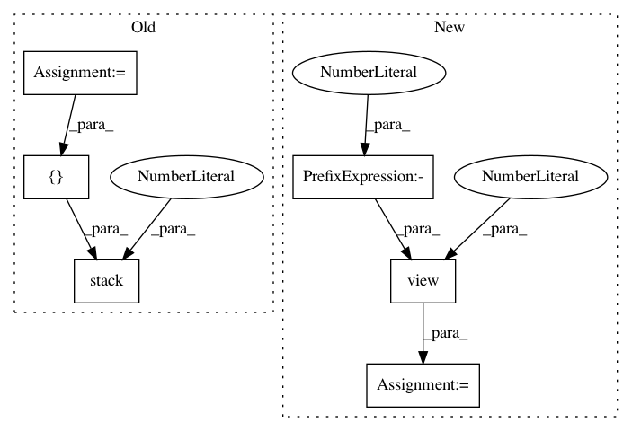

9e209a09abbe3a4b1810eb2b20c3cd29f35cbd7b,torch_geometric/nn/functional/pool/coalesce.py,,remove_self_loops,#Any#,5
Before Change
def remove_self_loops(index):
row, col = index
mask = row != col
return torch.stack([row[mask], col[mask]], dim=0)
def coalesce(index):
e = (index.max() + 1) * index[0] + index[1]
After Change
def remove_self_loops(index):
mask = (index[0] != index[1]).view(1, -1).expand(2, -1)
return index[mask].view(2, -1)
def coalesce(index):
In pattern: SUPERPATTERN
Frequency: 3
Non-data size: 6
Instances
Project Name: rusty1s/pytorch_geometric
Commit Name: 9e209a09abbe3a4b1810eb2b20c3cd29f35cbd7b
Time: 2018-02-07
Author: matthias.fey@tu-dortmund.de
File Name: torch_geometric/nn/functional/pool/coalesce.py
Class Name:
Method Name: remove_self_loops
Project Name: rusty1s/pytorch_geometric
Commit Name: d02077d0a68fbd4d388ea9afbbbcbccb4af78433
Time: 2017-11-08
Author: matthias.fey@tu-dortmund.de
File Name: examples/mnist_superpixel_75.py
Class Name:
Method Name: train
Project Name: rusty1s/pytorch_geometric
Commit Name: d02077d0a68fbd4d388ea9afbbbcbccb4af78433
Time: 2017-11-08
Author: matthias.fey@tu-dortmund.de
File Name: examples/mnist_superpixel_75.py
Class Name:
Method Name: test